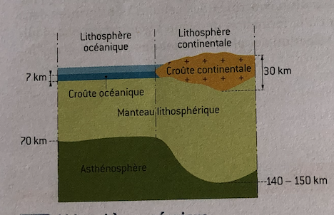
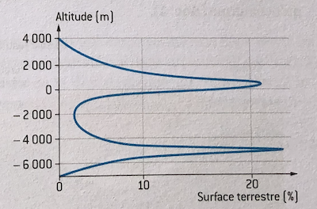
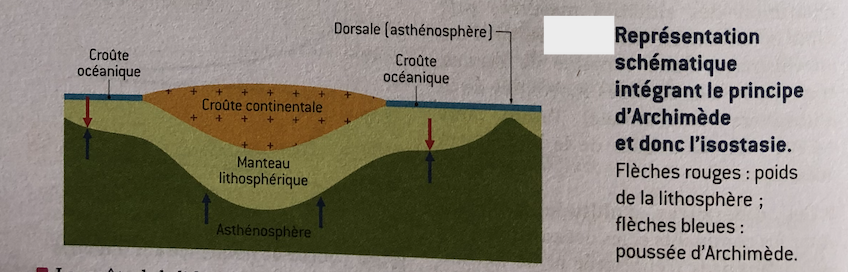

1) Les différences structurales entre lithosphères océanique et continentale
La lithosphère, couche superficielle rigide globe est divisée en plaques. La lithosphère océanique
est toujours relativement jeune (moins de 200 millions d'années). Au contraire, la lithosphère
continentale a un âge qui varie de -4 milliards d'années à l'actuel.
A. Rappels sur les lithosphères
La lithosphère est formée d'une croûte et du manteau litho- sphérique (partie supérieure du manteau)
qui repose sur l'asthénosphère. La lithosphère continentale (120 à 150 km d'épaisseur en moyenne) est
plus épaisse que la lithosphère océanique (60 à 100 km d'épaisseur dans les bassins océaniques profonds).
Le manteau lithosphérique est constitué de péridotite, une roche sombre, verdâtre entièrement cris- tallisée,
formée essentiellement d'olivine et de pyroxène. Ce manteau est de même nature dans les litho- sphères continentale
et océanique.

B. Croûte continentale et croûte océanique
Lithosphère continentale et lithosphère océanique diffèrent uniquement par leur croûte.
La croûte océanique (7 km d'épaisseur moyenne) comporte une succession de couches sous les sédiments:
des basaltes en coussins, roches magmatiques volcaniques effusives résultant de la solidification
rapidela cristallisation partielle d'un magma arrivant surface;
des gabbros (environ 5 km d'épaisseur), roches magmatiques plutoniques résultant du refroidissement
lent et de la cristallisation complète du magma, sous les basaltes.
Basaltes et gabbros ont la même composition minéralogique (olivine, pyroxène et feldspaths plagioclases) et chimique :
la composition de la croûte océanique est globalement voisine de celle du basalte.
La croûte continentale (35 km d'épaisseur moyenne) est plus hétérogène que la croûte océanique. Sous une couverture sédimentaire
d'épaisseur variable suivant les régions se trouve le socle constitué par les granites, roches magmatiques plutoniques, et des
gneiss, roches magmatiques plutoniques, et des roches métamorphiques. Les principaux minéraux de ces roches sont le quartz,
les feldspaths et micas. Contrairement aux granites, les gneiss sont des roches litées où des lits sombres (micas) alternent
avec des lits clairs (quartz et feldspaths).
Croûte continentale et croûte océanique sont deux entités différentes. La nature différente des croûtes continentale et océanique
font qu'elles n'ont pas la même densité: 2,7 pour les continents contre 2,9 pour la croûte océanique.Il en est donc de même pour
la lithosphère continentale et pour la lithosphère océanique : la lithosphère conti nentale est moins dense que la lithosphère
océanique (le manteau lithosphérique ayant une densité moyenne de 3,3).
2) La topographie continent-océan
A. La répartition bimodale des altitudes
Les altitudes de la surface de la Terre se répartissent en deux groupes. La courbe de répartition des altitudes mesurées présente
en effet deux maxima : l'un, au voisinage d'une centaine de mètres, correspond aux altitudes moyennes la lithosphère
continentale, l'autre, vers -4700 mètres, à celles de la lithosphère océanique.
Ces différences d'altitude moyenne entre les continents et les océans sont dues aux différences d'épaisseur et de densité des
lithosphères continentale et océanique. Pour le comprendre, il faut faire appel à la notion d'isostasie.

B. La notion d'isostasie
Il y a 20 000 ans, le bouclier scandinave était recouvert d'une lourde calotte glaciaire.
A partir de -15 000 ans, la déglaciation a commencé et vers -10 000 ans, la glace avait complètement disparu.
On a constaté une augmentationde l'altitude du bouclier scandinave qui se poursuit aujourd'hui au rythme d'un
centimètre par an environ.
La lithosphère continentale, qui s'était enfoncée en raison d'une surcharge de glace, s'est ensuite élevée et continue à
s'élever après la disparition de cette surcharge: ce comporte- ment est comparable à celui d'un solide placé dans un liquide
et obéissant au principe d'Archimède.
Si le poids d'un corps est inférieur à la poussée d'Archimède, il flotte : une partie est immergée et l'autre émergée.
L'importance de la partie émergée dépend de la densité et de l'épaisseur (hauteur) du corps :
la densité du corps dans son ensemble doit être inférieure à celle du fluide pour qu'il flotte; et il flottera
d'autant plus que sa densité sera faible;
à densités égales, les hauteurs émergée et immergée seront toujours dans les mêmes pro- portions.
En conséquence, ces hauteurs émergée et immergée sont d'autant plus grandes que l'épaisseur du corps est importante.
L’isostasie est l’application à la terre du principes d’Archimède. Dans le cas du globe terrestre, le fluide est l’atmosphère et
le solide qui flotte est la lithosphère.
C. Isostasie et différence d'altitude entre les deux lithosphère
Considérons une plaque lithosphérique avec une partie continentale et une partie océa- nique:
toutes les deux « flottent » sur l'asthénosphère. Cela signifie que l'asthénosphère exerce une poussée
d'Archimède sur la plaque aussi bien dans sa partie continentale qu'océanique.

La croûte de la lithosphère océanique a une densité (2,9) supérieure à celle (2,7) de la croûte continentale.
De plus, la lithosphère continentale a une épaisseur (150 km environ) supérieure à celle de la plaque océanique
(70 km d'épaisseur environ). C'est pourquoi la lithosphère continentale a une partie « émergeant » de l'asthénosphère
plus grande que celle de la lithosphère océanique. Il en résulte que tout changement de densité et/ou d'épaisseur des
lithosphères entraînera des mouvements verticaux qualifiés de réajustements isostatiques.
3) La datation de la croûte continentale
La croûte océanique a un âge compris entre 0 (pour celle qui se forme actuellement à l'axe des dorsales) et 200 millions d'années
pour la plus ancienne. Cet âge a été déterminé grâce aux anomalies magnétiques et à la connaissance de la vitesse d'expansion des
fonds océaniques. La datation de la croûte continentale s'appuie sur la désintégration d'isotopes radioactifs présents dans des
minéraux des roches magmatiques et métamorphiques:c'est la radiochronologie.
A. Les principes de la chrnologie
Les méthodes reposent sur la présence d'éléments radioactifs (isotopes radioactifs) piégés dans les minéraux des roches
magmatiques et métamorphiques au moment de leur formation. A partir de ce moment ,le minéral forme un système clos, n'ayant aucun
échange avec son environnement. Il n'y a ni apport ni perte de l'élément radioactif.
Au sein du minéral, l'isotope radioactif appelé isotope père subit une désintégration radioactive en émettant un rayonnement.
Il se transforme en un isotope fils stable. Il en résulte qu'au fur et à mesure du temps, le nombre d'atomes de l'isotope père
diminue, alors que celui de l'isotope fils augmente.
B. Les âge de la croûte continentale
Les plus vieilles roches continentales connues au Groenland, en Australie et au nord-est de l'Amérique du Nord ont 3,8 Ga.
Les géologues estiment que la formation de la croûte continentale a débuté il y a 4 Ga. On peut dégager les idées suivantes:
- Une grande partie de la croûte continentale est beaucoup plus vieille que la croûte océanique. Cela ne signifie pas que la
croûte continentale se soit formée avant la croûte océanique, c'est en réalité l'inverse: la première croûte océanique s'est
formée avant la première croûte continentale. Cela s'explique par le fait que la croûte continentale ne subducte pas,
contrairement à la croûte océanique.
Les âges variés de la croûte continentale témoignent de sa croissance à partir des premiers fragments formés il y a 4 Ga.
Maintenant que vous avez fini la lecon sur ce chapitre,
on vous a proposé une Quiz pour tester vous connaissance sur cette leçon.
Allez! C'est parti! Balançez-vous! Cliquer sur le smiley!